The report follows the 14 steps given on the course sheet. Each step starts with the task and the deliverable exactly as given,
then a checklist that points to where every deliverable is shown, followed by the evidence: screenshots of the running application,
Jenkins and GitHub, rendered command/log output, code listings and tables. Terminal and log figures are rendered from the real command output and Jenkins/Ansible logs saved during the work;
long logs are shown as excerpts (lines were selected, never altered). The complete source, scripts and raw logs are in the repository.
Step
Title
1
Problem Definition and Scope
2
Agile Planning and DevOps Workflow
3
Requirements, Architecture and Technology Setup
4
Git and GitHub Repository Initialization
5
Feature Development with Branching
6
MVP Completion and Git Collaboration
7
Jenkins Installation and Continuous Integration Job
8
Pipeline as Code and Server Deployment
9
Selenium Test Design and Local Execution
10
Continuous Testing in Jenkins
11
Docker Image and Container Lifecycle
12
Jenkins-Docker Continuous Deployment
13
Configuration Management Script
14
Automated Provisioning and Reliability Validation
Technology used
Java 11, Spring Boot 2.7, Thymeleaf, H2 | Maven 3.9.9 | Git/GitHub | Jenkins 2.580 (JDK 21) | Apache Tomcat 9.0.98 |
Selenium 4.21 + Microsoft Edge 155 | Docker 29 + local registry (registry:2) | Ansible core 2.17 (control node in a container), Ubuntu 22.04 managed node.
STEP 1
Problem Definition and Scope
Task given: Study the real-time need for the Device Compliance Management Portal. Identify target users, existing pain points, stakeholders, constraints and measurable success criteria. Freeze a small 15-Task MVP scope.
Deliverable required: Problem statement, stakeholder list, objectives, constraints and approved MVP scope.
Document written for the Device Compliance Management Portal: problem, users, objectives, constraints and the frozen 15-task MVP. Source: docs/01-problem-definition-and-scope.md in the repository.
Deliverable required by the sheet
Shown in this report
Problem statement
Section 1 below
Stakeholder list
Section 2 table
Objectives
Section 4
Constraints
Section 5 (and success criteria, section 6)
Approved MVP scope
Section 7 - 15 tasks, out-of-scope list
1. Problem Statement
Organisations (college labs, small IT teams) track laptops, desktops and servers in
spreadsheets. Checks such as OS patch level, antivirus status, disk encryption and
firewall state are done manually, so non-compliant devices go unnoticed, audits are slow,
and there is no single place to see who is responsible for fixing what.
The portal centralises device records, evaluates each device against compliance rules,
and drives a role-based workflow (Reported -> Under Review -> Remediated -> Closed).
2. Target Users & Stakeholders
Stakeholder
Role in system
Need
IT Administrator
ADMIN
Register devices, manage rules, close findings
Compliance Officer
AUDITOR
Review non-compliant devices, approve remediation
Technician
TECHNICIAN
Fix issues, update device status
Department Head / Management
Viewer (dashboard)
Summary of compliance posture
Course Teacher / Evaluator
External
Verify DevOps pipeline end to end
3. Existing Pain Points
Spreadsheet records are stale, duplicated and not searchable.
No ownership/accountability trail for remediation.
No instant summary (compliant vs non-compliant counts).
Manual deployment of internal tools is error prone.
4. Objectives
Create, view, update and search device records.
Role-based status workflow for compliance findings.
Summary dashboard (total / compliant / non-compliant / under review).
Fully automated build, test, containerise and deploy pipeline (CI/CD).
5. Constraints
Individual student project; one semester timeline.
Java 11, Maven, Spring Boot, embedded H2 DB; Tomcat/Docker targets.
Free tools only (GitHub, Jenkins, Docker Hub, Ansible).
Runs on a single local node (Windows 11 + Docker).
6. Measurable Success Criteria
All 15 MVP tasks done and demonstrable.
≥ 4 Selenium journeys pass automatically in Jenkins.
Commit-to-running-container pipeline completes in < 10 min.
Out of scope: agent-based auto-scanning, email alerts, SSO, multi-tenant.
Approved by: Course teacher (for the course teacher's sign-off)
STEP 2
Agile Planning and DevOps Workflow
Task given: Create user stories and acceptance criteria for the Device Compliance Management Portal. Prepare a product backlog, 15-Task Kanban/Scrum plan, Definition of Done and a DevOps lifecycle diagram from development to operations.
Deliverable required: Backlog, task board, sprint plan, Definition of Done and DevOps workflow diagram.
Agile artefacts for the portal. The Kanban board and backlog are maintained as tables in the repository (docs/02-agile-planning-and-devops-workflow.md); the final state of the backlog is in step 6.
Deliverable required by the sheet
Shown in this report
Backlog
10 user stories with acceptance criteria + prioritised 15-task backlog
Task board
Kanban table (state at planning time); final board in step 6
Sprint plan
3 sprints with goals
Definition of Done
Section 5
DevOps workflow diagram
Figure: DevOps lifecycle
1. User Stories & Acceptance Criteria
ID
User Story
Acceptance Criteria
US1
As an Admin, I want to register a device so it is tracked.
Form validates name, owner, OS, serial; saved device appears in list.
US2
As a user, I want to view all devices and details.
List shows name, owner, status; clicking opens detail page.
US3
As an Admin/Technician, I want to update a device.
Edits persist; validation errors shown inline.
US4
As a user, I want to search devices.
Search by name/owner/status returns matching rows; empty result message shown.
US5
As an Auditor, I want devices auto-evaluated against rules.
Device with outdated OS / no AV / no encryption / firewall off is flagged NON_COMPLIANT.
US6
As a user, I want to log in with a role.
Wrong credentials rejected; menus depend on role.
US7
As staff, I want a status workflow.
Only allowed transitions per role (Technician: Reported->Under Review->Remediated; Auditor/Admin: ->Closed).
US8
As an Auditor, I want status history.
Each transition stores who, when, from, to.
US9
As a manager, I want a dashboard.
Shows totals of compliant, non-compliant, under review devices.
US10
As an Ops engineer, I want a health endpoint.
/actuator/health returns UP.
2. Product Backlog (prioritised, 15 tasks)
#
Task
Story
Pts
Sprint
1
Project skeleton (Spring Boot, Maven)
-
2
1
2
Device entity & repository
US1
3
1
3
Create device form
US1
3
1
4
List/view devices
US2
2
1
5
Device details page
US2
2
1
6
Update device
US3
3
2
7
Search/filter
US4
3
2
8
Compliance rule engine
US5
5
2
9
Roles & login
US6
5
2
10
Status workflow w/ role checks
US7
5
3
11
Status history log
US8
3
3
12
Summary dashboard
US9
3
3
13
Validation & error pages
US1,3
2
3
14
Health endpoint
US10
1
3
15
README & API docs
-
2
3
3. Sprint Plan (3 sprints x ~1 week)
Sprint 1 – Foundation & Feature 1: tasks 1-5 (device create/list/view). Goal: first working workflow.
Sprint 3 – Workflow & Release: tasks 10-15, release tag v1.0.0.
DevOps work (Jenkins, Docker, Ansible) runs in parallel as a pipeline track.
4. Kanban Board (current state)
Backlog
To Do
In Progress
Review
Done
6-15
2,3,4,5
1
-
Step 1 scope, Step 2 planning
Columns WIP limit: In Progress <= 2, Review <= 2. Board maintained as GitHub Project / Issues.
5. Definition of Done
Code compiled, merged to develop via reviewed pull request.
Unit tests pass; Selenium journey for the feature passes.
Jenkins build is green.
Acceptance criteria demonstrated.
README/docs updated; no critical warnings.
Deployable as WAR and Docker image.
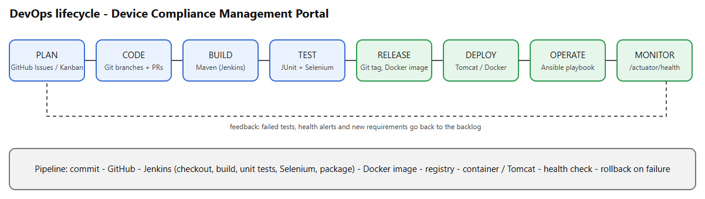
Figure 2.1 - DevOps lifecycle from development to operations (as implemented in this project)
STEP 3
Requirements, Architecture and Technology Setup
Task given: Design the minimum application architecture for the Device Compliance Management Portal. The MVP should cover create, view, update and search records; role-based status workflow; summary dashboard. Select the programming stack, Maven/Gradle/Ant build tool, database if required, Tomcat/Nginx deployment target and local development setup.
Deliverable required: SRS summary, use-case diagram, architecture diagram, data model/API list and working local setup.
Architecture and technology choices, plus a working local setup (build, tests, run). Source: docs/03-requirements-architecture-setup.md.
Deliverable required by the sheet
Shown in this report
SRS summary
Section 1
Use-case diagram
Figure 3.1
Architecture diagram
Figure 3.2
Data model / API list
Sections 5 and 6
Working local setup
Figures 3.3-3.4: build output and running application
1. SRS Summary
Functional: FR1 create device · FR2 view list/details · FR3 update · FR4 search (name/owner/status) ·
FR5 compliance evaluation · FR6 login with roles · FR7 role-based status workflow · FR8 status history · FR9 dashboard · FR10 health endpoint.
Non-functional: NFR1 page response < 2 s · NFR2 passwords hashed · NFR3 deployable as WAR (Tomcat) and Docker image ·
NFR4 automated build/test/deploy · NFR5 idempotent provisioning.
2. Technology Stack
Layer
Choice
Language / Framework
Java 11, Spring Boot 2.7 (MVC, Data JPA, Validation, Actuator)
Figure 4.3 - Initial commits with meaningful messages
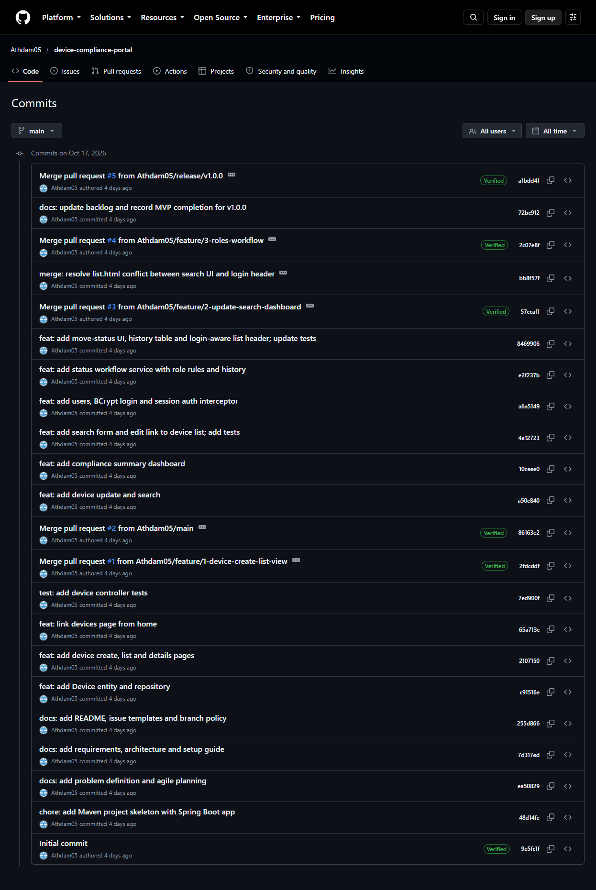
Figure 4.4 - Commit history on GitHub
Issue templates (.github/ISSUE_TEMPLATE)
feature_request.md
---
name: Feature / user story
about: Propose a feature or MVP task
labels: enhancement
---
**User story**
As a <role>, I want <goal> so that <benefit>.
**Acceptance criteria**
- [ ]
**Branch:** `feature/<issue#>-<name>`
Figure 4.6 - Example issue with acceptance criteria
Branch naming and policy (from README)
Branch policy
Branch
Purpose
main
stable, tagged releases only
develop
integration branch; PRs merge here
feature/<issue#>-<short-name>
new features (e.g. feature/3-create-device)
bugfix/<issue#>-<short-name>
bug fixes
hotfix/<short-name>
urgent fixes from main
Rules: no direct pushes to main/develop; every change via pull request with review;
commit messages follow type: summary (feat, fix, docs, test, chore, ci).
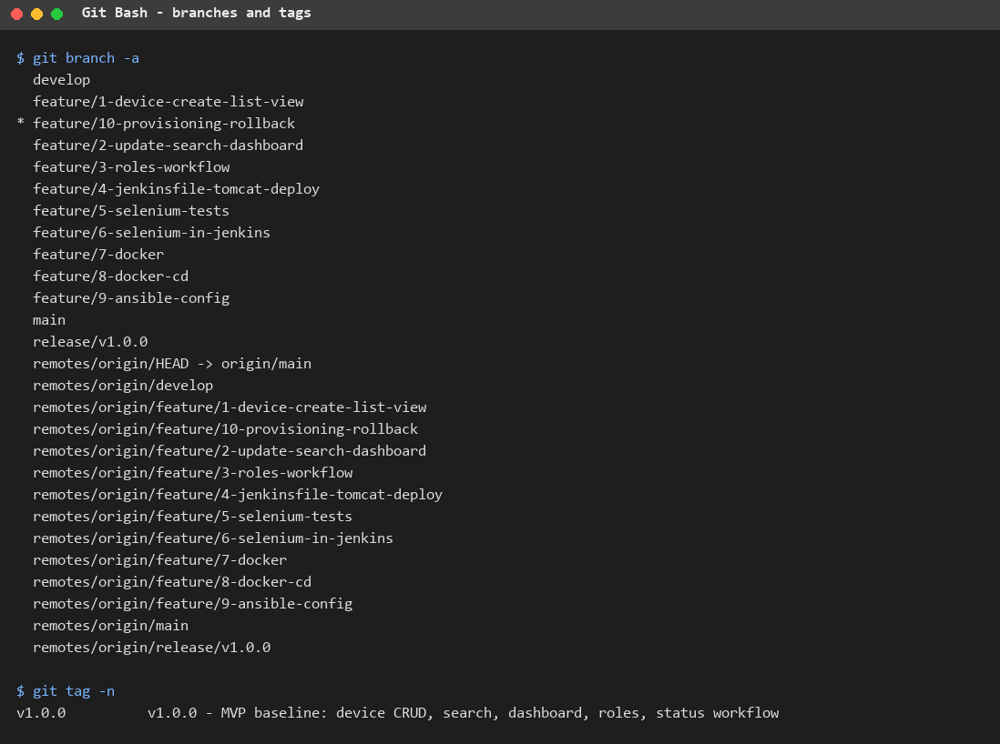
Figure 4.7 - Branches and tag in the repository
STEP 5
Feature Development with Branching
Task given: Implement the first core workflow of the Device Compliance Management Portal on a feature branch. Use add, commit, push, pull and logs. Raise a pull request, review changes and merge into the development branch.
Deliverable required: Working feature 1, feature branch, pull request, review comments and merge evidence.
Feature 1 (Device entity, create, list and details) was built on branch feature/1-device-create-list-view, reviewed and merged through pull requests.
Deliverable required by the sheet
Shown in this report
Working feature 1
Figures 5.1-5.4 (screens of the running feature)
Feature branch
Figure 5.5 (git log / branch), 4 commits
Pull request
Figures 5.6-5.7 (PR #1 into develop/main, PR #2)
Review comments
Figure 5.8
Merge evidence
Figures 5.6-5.7 (Merged badge, merge commit)
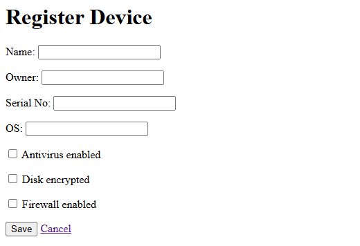
Figure 5.1 - Create device form
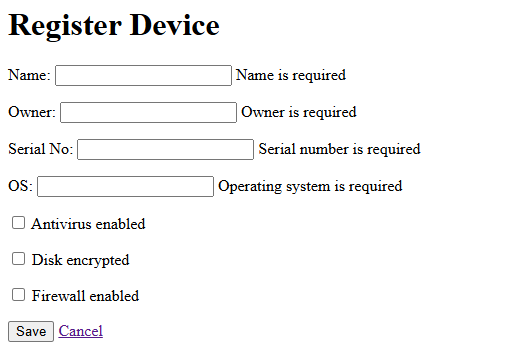
Figure 5.2 - Validation errors on an empty form
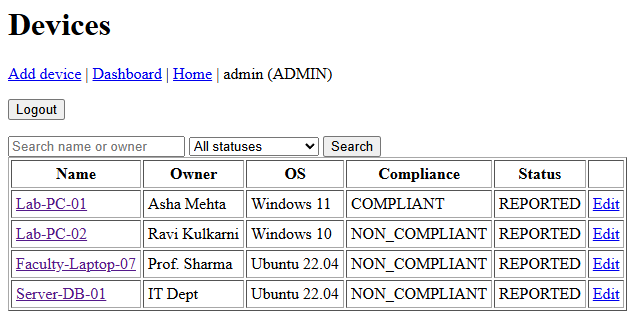
Figure 5.3 - Device list (4 devices; compliance computed from the 3 controls)
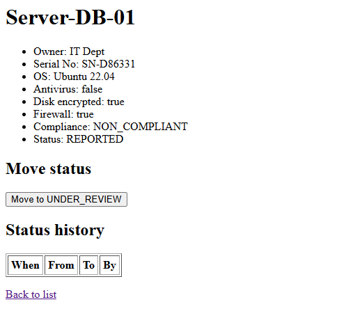
Figure 5.4 - Device details page
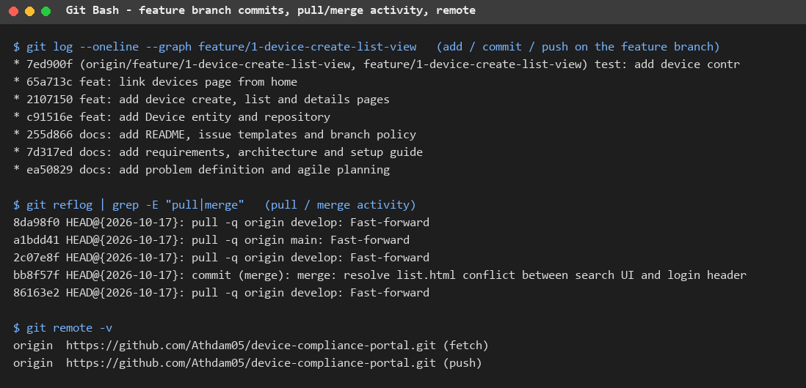
Figure 5.5 - Feature branch commits, pull/merge activity and remote
Figure 5.7 - Pull request #2 into develop - merged
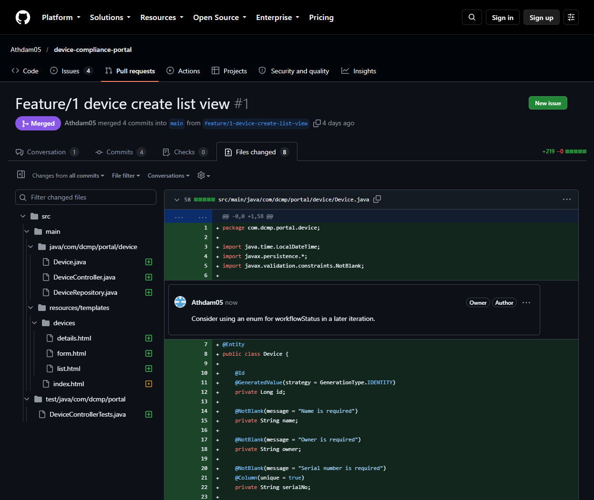
Figure 5.8 - Review comment on the feature-1 pull request
STEP 6
MVP Completion and Git Collaboration
Task given: Implement the remaining essential MVP functions for the Device Compliance Management Portal: create, view, update and search records; role-based status workflow; summary dashboard. Demonstrate a second feature branch, conflict creation/resolution, tagging and a release-ready source baseline.
Deliverable required: Functional MVP, resolved merge conflict, tagged version and updated backlog.
Remaining MVP functions were built on two further branches: feature/2-update-search-dashboard and feature/3-roles-workflow. A real merge conflict between them was created and resolved, and release v1.0.0 was tagged.
Figure 6.6 - Technician moves to REMEDIATED; history is recorded
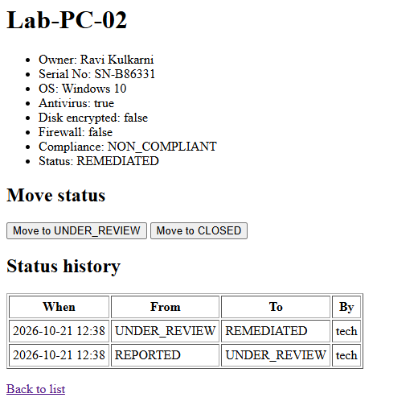
Figure 6.7 - Auditor sees the only allowed action: close
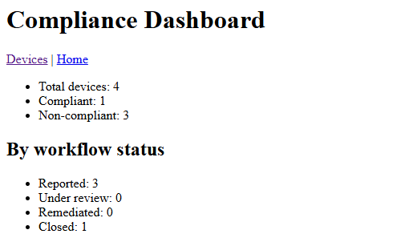
Figure 6.8 - Summary dashboard
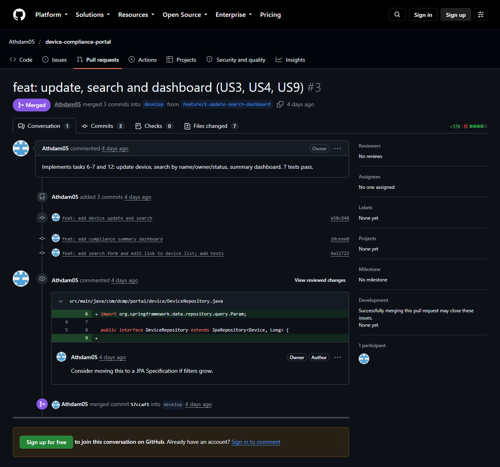
Figure 6.9a - PR #3 (feature/2) merged into develop
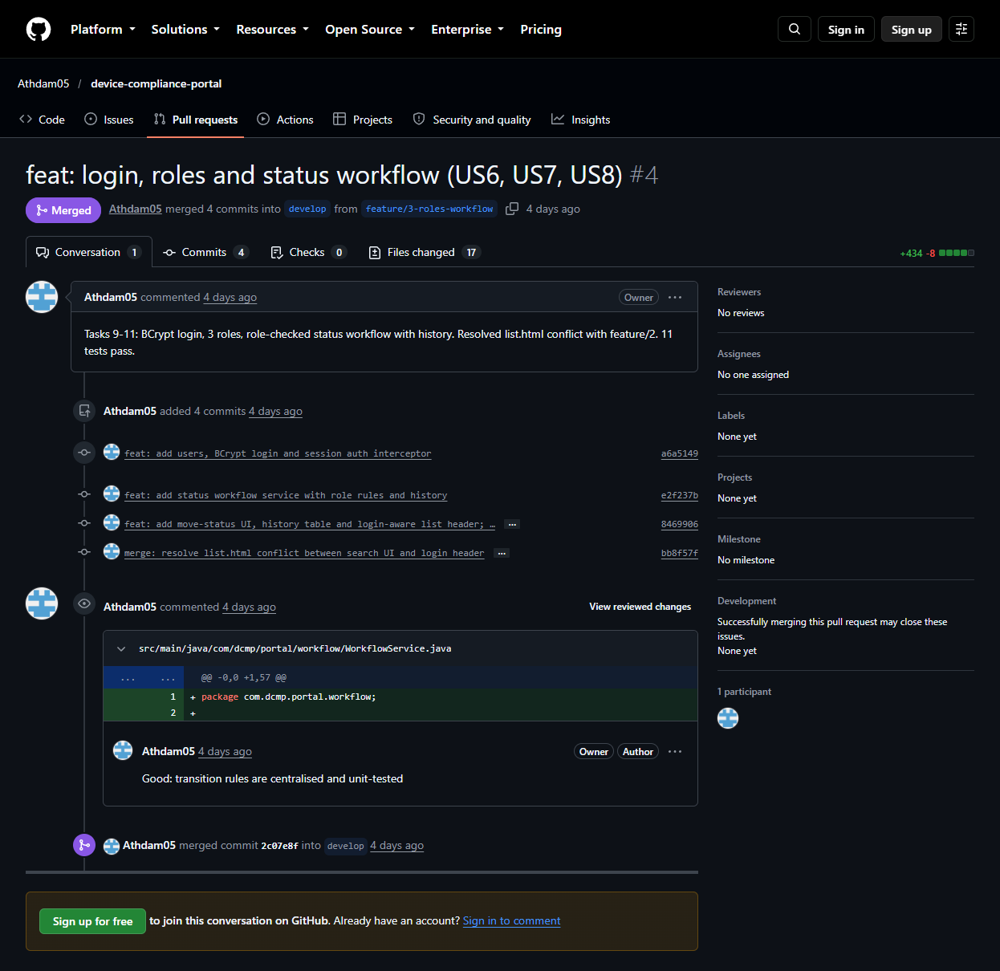
Figure 6.9b - PR #4 (feature/3) merged after conflict resolution
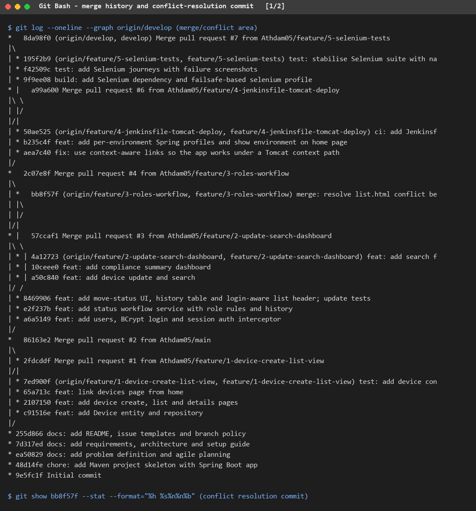
Figure 6.10 - Merge history and the conflict-resolution commit bb8f57f (part 1)
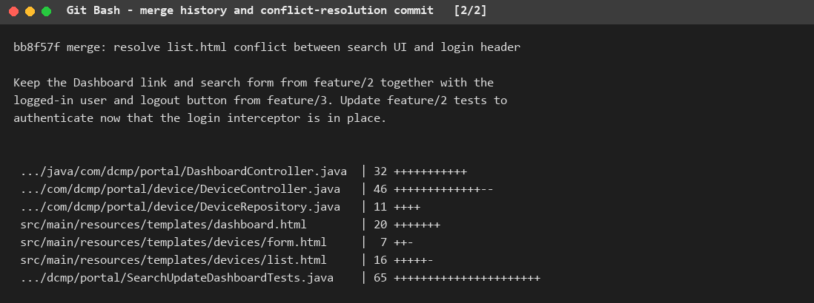
Figure 6.10 - Merge history and the conflict-resolution commit bb8f57f (part 2)
The conflict
Both branches edited the header line of src/main/resources/templates/devices/list.html (feature/2 added the Dashboard link and search form; feature/3 added the logged-in user and Logout). Merging origin/develop into feature/3 reported CONFLICT (content): Merge conflict in src/main/resources/templates/devices/list.html; the resolution kept both changes and the feature/2 tests were updated to log in. 11 tests passed afterwards.
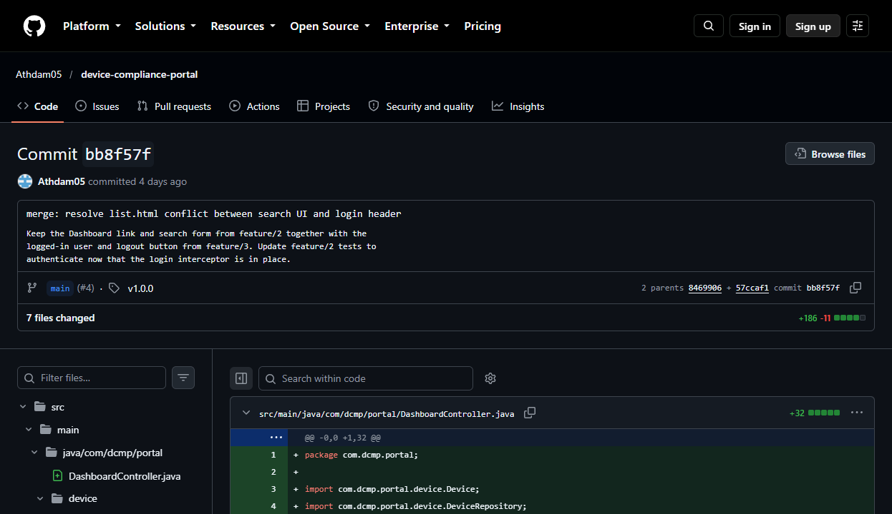
Figure 6.11 - Resolution commit on GitHub
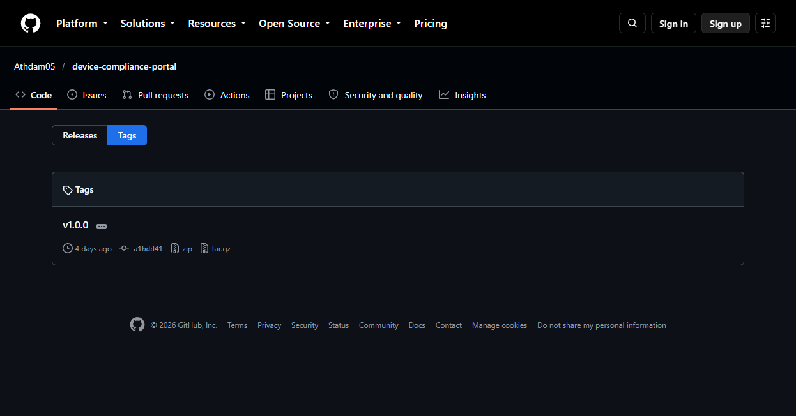
Figure 6.12 - Tag v1.0.0
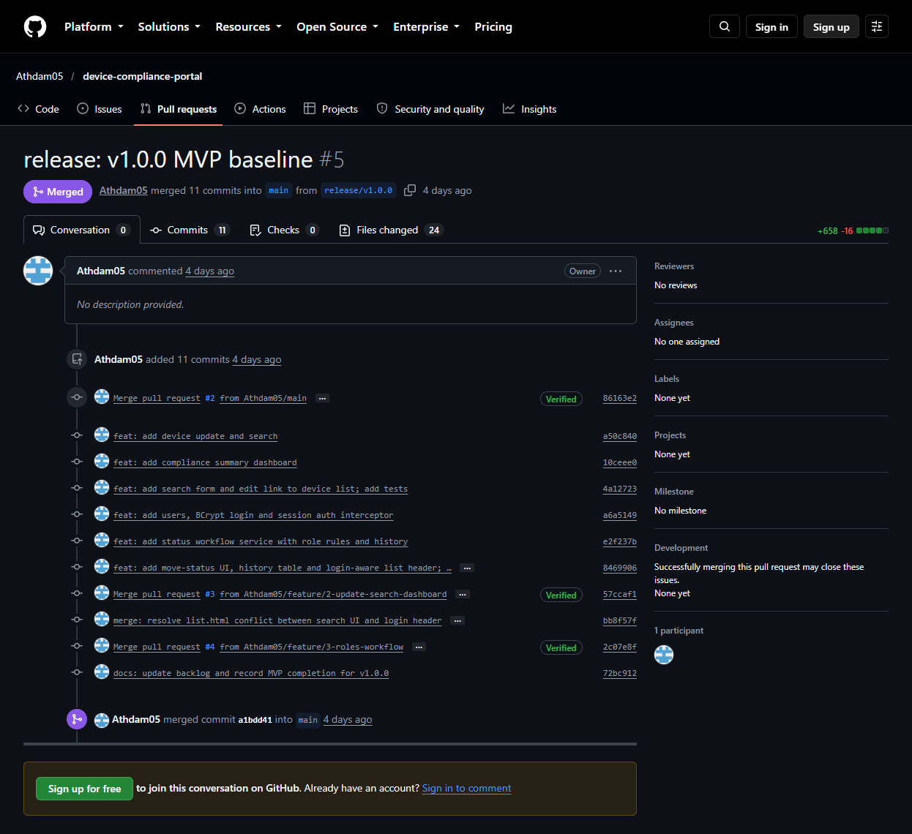
Figure 6.13 - Release PR #5 into main
Updated backlog (end of sprint 3)
1. Updated Backlog (end of Sprint 3)
#
Task
Status
Delivered in
1
Project skeleton (Spring Boot, Maven)
Done
main (initial commits)
2
Device entity & repository
Done
PR #1 feature/1-device-create-list-view
3
Create device form
Done
PR #1
4
List/view devices
Done
PR #1
5
Device details page
Done
PR #1
6
Update device
Done
PR #3 feature/2-update-search-dashboard
7
Search/filter (name, owner, status)
Done
PR #3
8
Compliance rule evaluation
Done (simplified)
PR #1 – antivirus + disk encryption + firewall. OS-version rule deferred to backlog
9
User roles & login (BCrypt, session)
Done
PR #4 feature/3-roles-workflow
10
Status workflow with role checks
Done
PR #4
11
Status history log
Done
PR #4
12
Summary dashboard
Done
PR #3
13
Input validation & error pages
Done (validation); custom error pages deferred
PR #1
14
Health endpoint
Done
/actuator/health
15
README & documentation
Done (docs 01-06, README)
main
Carried over to next backlog: OS-version compliance rule, custom error pages, REST/JSON API docs.
Demo users (seeded, passwords stored as BCrypt hashes): admin/admin123, auditor/auditor123, tech/tech123.
These are demo credentials for the coursework only.
STEP 7
Jenkins Installation and Continuous Integration Job
Task given: Install and configure Jenkins. Connect the Device Compliance Management Portal GitHub repository and create a Maven/Gradle/Ant build job triggered by commit or scheduled polling. Archive the build artefact.
Jenkins 2.580 (LTS) runs from the WAR on port 9090 using JDK 21; the project itself is built with JDK 11 and Maven 3.9.9. Freestyle job dcmp-ci polls the repository (H/2 * * * *) and builds on every change.
Deliverable required by the sheet
Shown in this report
Configured Jenkins job
Figures 7.1-7.2
Successful build log
Figures 7.3-7.4
Trigger evidence
Figure 7.5: 'Started by an SCM change' + polling log
Archived artefact
Figure 7.6
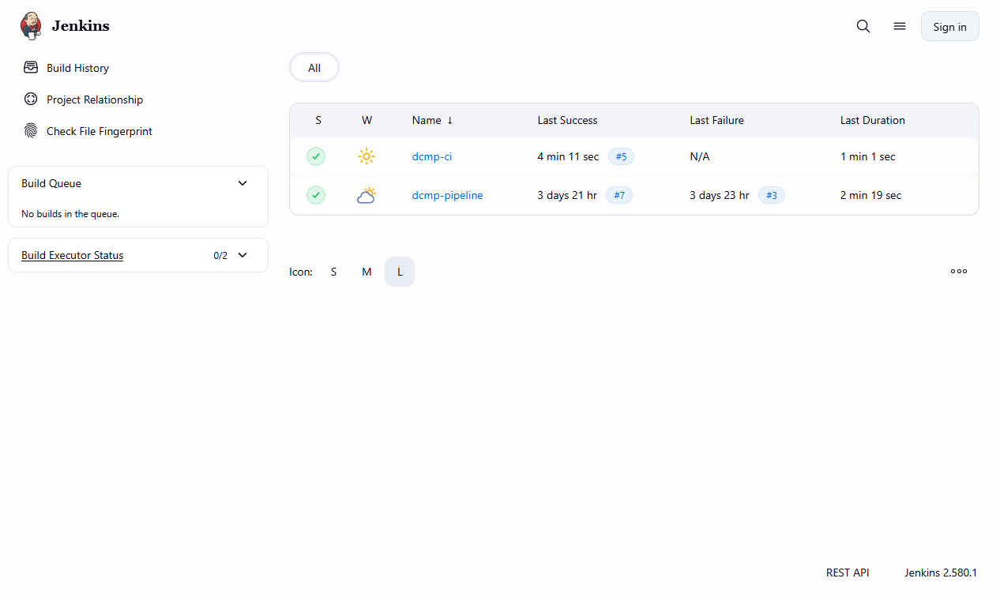
Figure 7.1 - Jenkins dashboard with the jobs
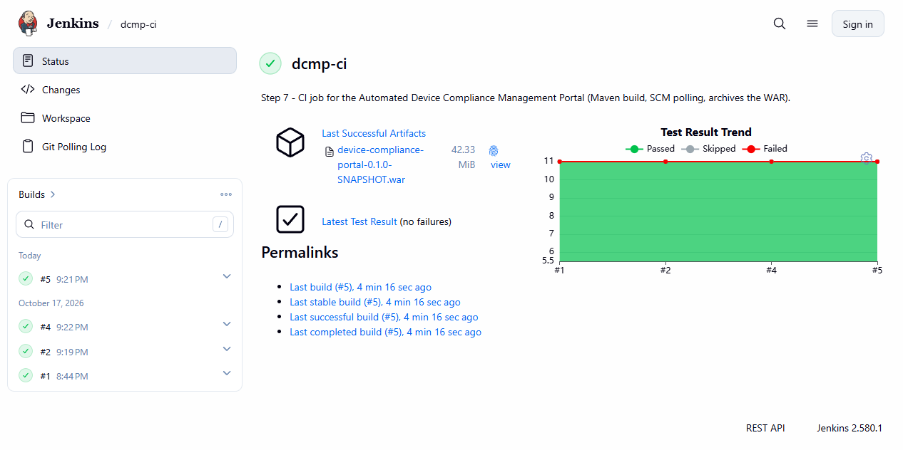
Figure 7.2 - Job dcmp-ci: status, last build, archived WAR, test result trend
Task given: Create a Jenkinsfile for the Device Compliance Management Portal with checkout, build, package and deploy stages. Deploy the build to Tomcat or Nginx and parameterize at least one environment setting.
Jenkinsfile in the repository root defines the pipeline. Apache Tomcat 9.0.98 (port 8081) is the deployment target. The environment is parameterised: Jenkins parameter DEPLOY_ENV (dev / qa) selects the Spring profile (application-dev.properties, application-qa.properties), and APP_CONTEXT sets the context path.
// Step 8 - Pipeline as Code: checkout -> build -> package -> deploy to Tomcat.
// Runs on the local Jenkins node (Windows). Tool locations are parameters/env so they can be changed in one place.
pipeline {
agent any
parameters {
// Parameterised environment setting: selects the Spring profile (application-<env>.properties)
choice(name: 'DEPLOY_ENV', choices: ['dev', 'qa'], description: 'Target environment / Spring profile')
string(name: 'APP_CONTEXT', defaultValue: 'dcmp', description: 'Tomcat context path for the WAR')
}
environment {
JAVA_HOME = 'C:\\Program Files\\Eclipse Adoptium\\jdk-11.0.32.101-hotspot'
MVN = 'C:\\Users\\damal\\tools\\apache-maven-3.9.9\\bin\\mvn.cmd'
TOMCAT_HOME = 'C:\\Users\\damal\\tools\\apache-tomcat-9.0.98'
EDGE_DRIVER = 'C:\\Users\\damal\\tools\\edgedriver\\msedgedriver.exe'
TEST_PORT = '8082'
REGISTRY = 'localhost:5000'
IMAGE_NAME = 'dcmp'
APP_VERSION = "1.0.${BUILD_NUMBER}"
CONTAINER_NAME = 'dcmp-app'
DOCKER_PORT = '8092'
CATALINA_HOME = "${TOMCAT_HOME}"
CATALINA_PID_DIR = "${TOMCAT_HOME}\\temp"
}
options {
timestamps()
disableConcurrentBuilds()
}
stages {
stage('Checkout') {
steps {
checkout scm
bat 'git log --oneline -1'
}
}
stage('Build') {
steps {
bat '"%MVN%" -B clean package'
}
post {
always {
junit 'target/surefire-reports/*.xml'
}
}
}
stage('Package') {
steps {
// Version the artefact with the Jenkins build number
bat 'copy /Y target\\device-compliance-portal-0.1.0-SNAPSHOT.war target\\%APP_CONTEXT%.war'
archiveArtifacts artifacts: 'target/*.war', fingerprint: true
}
}
stage('Selenium Tests') {
// Start the freshly built app on a private port with a throw-away in-memory database,
// run the browser tests against it and ALWAYS stop it again. A failure here stops the
// pipeline, so the Deploy stage below is never reached with a broken build.
steps {
bat '''
if exist selenium.pid del selenium.pid
powershell -NoProfile -Command "$p = Start-Process -FilePath '%JAVA_HOME%\\bin\\java.exe' -ArgumentList '-jar','target\\device-compliance-portal-0.1.0-SNAPSHOT.war','--server.port=%TEST_PORT%','--spring.datasource.url=jdbc:h2:mem:seleniumdb' -PassThru -WindowStyle Hidden; $p.Id | Out-File -Encoding ascii selenium.pid"
'''
bat '''
@echo off
set /a tries=0
:wait
curl -s -f http://localhost:%TEST_PORT%/actuator/health && goto up
set /a tries+=1
if %tries% GEQ 30 exit /b 1
ping -n 3 127.0.0.1 > nul
goto wait
:up
echo.
echo Test instance is up on port %TEST_PORT%
'''
bat '"%MVN%" -B failsafe:integration-test failsafe:verify -Pselenium -Dbase.url=http://localhost:%TEST_PORT% -Dwebdriver.edge.driver="%EDGE_DRIVER%"'
}
post {
always {
junit testResults: 'target/failsafe-reports/*.xml', allowEmptyResults: true
archiveArtifacts artifacts: 'target/screenshots/*.png', allowEmptyArchive: true
bat '''
if exist selenium.pid (
for /f %%p in (selenium.pid) do taskkill /F /PID %%p
del selenium.pid
)
exit /b 0
'''
}
}
}
stage('Deploy') {
steps {
// 1. Tell Tomcat which environment (Spring profile) to run with
bat '''
> "%TOMCAT_HOME%\\bin\\setenv.bat" echo set "JAVA_HOME=%JAVA_HOME%"
>> "%TOMCAT_HOME%\\bin\\setenv.bat" echo set "JAVA_OPTS=-Dspring.profiles.active=%DEPLOY_ENV%"
'''
// 2. Stop Tomcat if it is running (ignore errors when it is already stopped)
bat '''
call "%TOMCAT_HOME%\\bin\\shutdown.bat"
ping -n 8 127.0.0.1 > nul
exit /b 0
'''
// 3. Replace the deployed application
bat '''
if exist "%TOMCAT_HOME%\\webapps\\%APP_CONTEXT%" rmdir /S /Q "%TOMCAT_HOME%\\webapps\\%APP_CONTEXT%"
copy /Y target\\%APP_CONTEXT%.war "%TOMCAT_HOME%\\webapps\\%APP_CONTEXT%.war"
'''
// 4. Start Tomcat detached so the Jenkins build can finish
bat '''
set "BUILD_ID=dontKillMe"
set "JENKINS_NODE_COOKIE=dontKillMe"
start "tomcat" /B cmd /c ""%TOMCAT_HOME%\\bin\\catalina.bat" run > "%TOMCAT_HOME%\\logs\\jenkins-run.log" 2>&1"
exit /b 0
'''
}
}
stage('Verify') {
steps {
// Wait for the app to come up, then check health
bat '''
@echo off
set /a tries=0
:wait
curl -s -f http://localhost:8081/%APP_CONTEXT%/actuator/health && goto ok
set /a tries+=1
if %tries% GEQ 30 exit /b 1
ping -n 4 127.0.0.1 > nul
goto wait
:ok
echo.
echo Deployed: http://localhost:8081/%APP_CONTEXT%/ ^(env=%DEPLOY_ENV%^)
'''
}
}
// ---- Step 12: continuous deployment with Docker (only reached when every stage above passed) ----
stage('Docker Build') {
steps {
// Versioned image: 1.0.<build number>; "latest" always points at the newest good build
bat '''
docker build --label git.commit=%GIT_COMMIT% -t %REGISTRY%/%IMAGE_NAME%:%APP_VERSION% -t %REGISTRY%/%IMAGE_NAME%:latest .
docker image ls %REGISTRY%/%IMAGE_NAME%
'''
}
}
stage('Docker Push') {
steps {
bat '''
docker push %REGISTRY%/%IMAGE_NAME%:%APP_VERSION%
docker push %REGISTRY%/%IMAGE_NAME%:latest
echo Tags now in the registry:
curl -s http://%REGISTRY%/v2/%IMAGE_NAME%/tags/list
'''
}
}
stage('Docker Deploy') {
steps {
// Replace the running container with a fresh one created from the image pulled back out of the registry
bat '''
docker rm -f %CONTAINER_NAME% 2>nul
docker pull %REGISTRY%/%IMAGE_NAME%:%APP_VERSION%
docker run -d --name %CONTAINER_NAME% --restart unless-stopped -p %DOCKER_PORT%:8080 -v dcmp-app-data:/data -e SPRING_PROFILES_ACTIVE=%DEPLOY_ENV% %REGISTRY%/%IMAGE_NAME%:%APP_VERSION%
exit /b 0
'''
bat '''
@echo off
set /a tries=0
:wait
curl -s -f http://localhost:%DOCKER_PORT%/actuator/health && goto ok
set /a tries+=1
if %tries% GEQ 30 exit /b 1
ping -n 4 127.0.0.1 > nul
goto wait
:ok
echo.
echo Container %CONTAINER_NAME% is healthy: http://localhost:%DOCKER_PORT%/ ^(image %APP_VERSION%, env=%DEPLOY_ENV%^)
docker ps --filter name=%CONTAINER_NAME%
'''
}
}
}
post {
success { echo "Deployed to http://localhost:8081/${params.APP_CONTEXT}/ (env=${params.DEPLOY_ENV})" }
failure { echo 'Pipeline failed - see stage logs' }
}
}
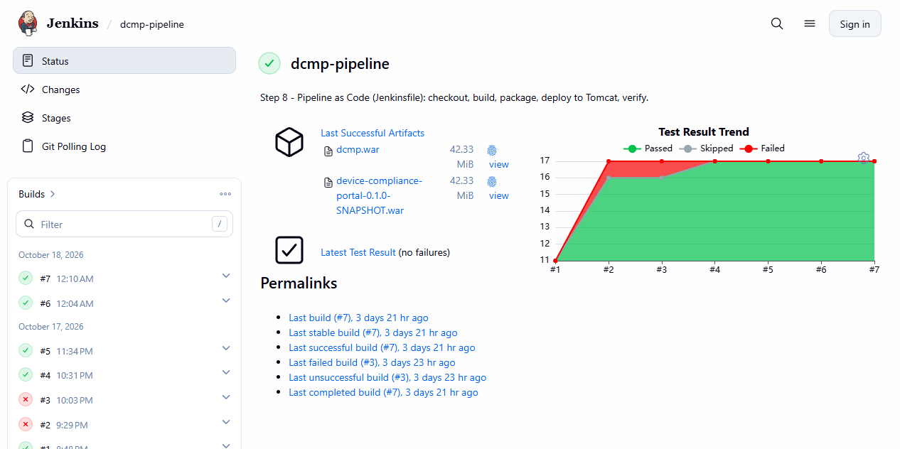
Figure 8.1 - Pipeline job: stage view of successful runs
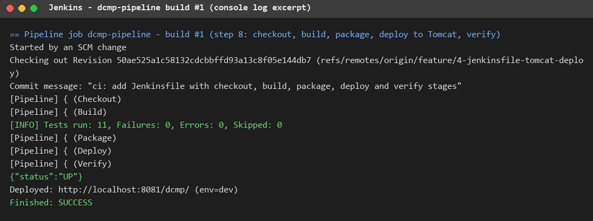
Figure 8.2 - Console excerpt of pipeline build #1: all stages passed, deployed to TomcatFigure 8.3 - Deployed application at http://localhost:8081/dcmp/ (Environment = DEV)Figure 8.4 - Health check of the Tomcat deployment
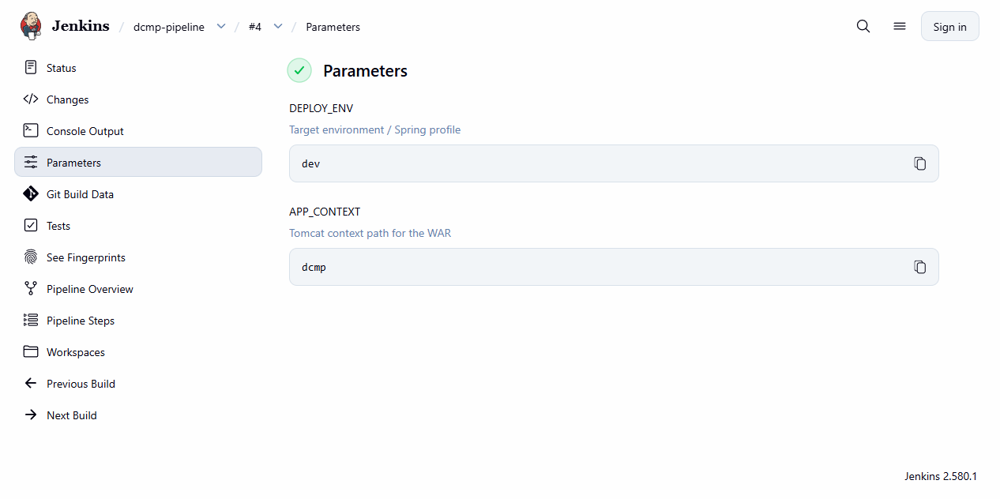
Figure 8.5 - Parameters used by a pipeline run (DEPLOY_ENV = dev, APP_CONTEXT = dcmp) - the parameterised environment setting
Task given: Identify three to five critical user journeys in the Device Compliance Management Portal. Write Selenium WebDriver test cases with assertions, test data and screenshots for failures. Execute the suite locally through Maven.
Deliverable required: Test plan, Selenium scripts, local test report and failure screenshot mechanism.
Five critical user journeys (six tests) are automated with Selenium WebDriver 4.21 in Microsoft Edge, run through Maven Failsafe (mvn verify -Pselenium). Detailed plan: docs/09-selenium-test-plan.md.
Deliverable required by the sheet
Shown in this report
Test plan
Tables below
Selenium scripts
Listings below
Local test report
Figure 9.1
Failure screenshot mechanism
Listing + Figure 9.2 (real failure screenshot)
1. Critical user journeys
ID
Journey
Why it is critical
J1
Invalid login is rejected; valid login reaches the device list
Gate to the whole application
J2
Register a device; details page shows COMPLIANT / NON_COMPLIANT
Core feature + compliance rule
J3
Search finds a registered device and shows "No devices found" for a miss
Core feature (US4)
J4
Technician moves a device to UNDER_REVIEW; history row recorded; no "Close" option
Role-based workflow (US7, US8)
J5
Dashboard totals are consistent (total = compliant + non-compliant)
Management summary (US9)
2. Test data
Each test creates its own device with a unique serial (SEL-<nanoTime>), so tests are independent and repeatable.
Demo users (seeded): admin/admin123, tech/tech123.
3. Test cases
Test
Steps
Assertion
j1_invalidLoginIsRejected…
login with wrong password; login admin/admin123
#login-error contains "Invalid"; URL ends with /devices; #who shows ADMIN
j2_registerCompliantDevice…
create device with all 3 controls ticked
#device-name equals name; #compliance = COMPLIANT
j2_registerDeviceWithMissingControls…
create device with only antivirus
#compliance = NON_COMPLIANT
j3_searchFinds…
create device; search by name; search for nonsense
table contains name; table contains "No devices found"
j4_technicianCanMove…
admin creates device; logout; tech moves to UNDER_REVIEW
#status = UNDER_REVIEW; history row by tech; no #to-CLOSED
j5_dashboardShowsSummaryCounts
create non-compliant device; open dashboard
total ≥ 1; total = compliant + non-compliant
4. Failure screenshot mechanism
BaseSeleniumIT registers a JUnit 5 TestExecutionExceptionHandler. When any test throws, it saves
target/screenshots/<TestClass>_<testMethod>.pngbefore the browser is closed, then rethrows the failure.
(An earlier version used TestWatcher, which runs after @AfterEach has closed the browser and produced no
screenshots — this was found and fixed during development.)
UserJourneysIT.java - the test cases
package com.dcmp.portal.selenium;
import static org.junit.jupiter.api.Assertions.assertEquals;
import static org.junit.jupiter.api.Assertions.assertTrue;
import org.junit.jupiter.api.Test;
import org.openqa.selenium.By;
/** Critical user journeys (see docs/09-selenium-test-plan.md). */
class UserJourneysIT extends BaseSeleniumIT {
// J1 - authentication
@Test
void j1_invalidLoginIsRejectedAndValidLoginReachesDeviceList() {
login("admin", "wrong-password");
assertTrue(driver.findElement(By.id("login-error")).getText().contains("Invalid"));
login("admin", "admin123");
assertTrue(driver.getCurrentUrl().endsWith("/devices"), "expected device list, was " + driver.getCurrentUrl());
assertTrue(driver.findElement(By.id("who")).getText().contains("ADMIN"));
}
// J2 - register a device and see its compliance result
@Test
void j2_registerCompliantDeviceShowsCompliantOnDetails() {
login("admin", "admin123");
String name = createDevice("J2", true, true, true);
assertEquals(name, driver.findElement(By.id("device-name")).getText());
assertEquals("COMPLIANT", driver.findElement(By.id("compliance")).getText());
}
@Test
void j2_registerDeviceWithMissingControlsIsNonCompliant() {
login("admin", "admin123");
createDevice("J2b", true, false, false);
assertEquals("NON_COMPLIANT", driver.findElement(By.id("compliance")).getText());
}
// J3 - search
@Test
void j3_searchFindsRegisteredDeviceAndHidesOthers() {
login("admin", "admin123");
String name = createDevice("J3", true, true, true);
search(name);
String table = driver.findElement(By.tagName("table")).getText();
assertTrue(table.contains(name));
search("no-such-device-xyz");
assertTrue(driver.findElement(By.tagName("table")).getText().contains("No devices found"));
}
// J4 - role-based workflow
@Test
void j4_technicianCanMoveToUnderReviewAndHistoryIsRecorded() {
login("admin", "admin123");
createDevice("J4", true, true, true);
String detailsUrl = driver.getCurrentUrl();
open("/devices");
clickAndWait(By.id("logout"));
login("tech", "tech123");
driver.get(detailsUrl);
clickAndWait(By.id("to-UNDER_REVIEW"));
assertEquals("UNDER_REVIEW", driver.findElement(By.id("status")).getText());
assertTrue(driver.findElement(By.xpath("//table//td[text()='tech']")).isDisplayed());
assertTrue(driver.findElements(By.id("to-CLOSED")).isEmpty(), "technician must not see Close");
}
// J5 - dashboard
@Test
void j5_dashboardShowsSummaryCounts() {
login("admin", "admin123");
createDevice("J5", false, false, false);
open("/dashboard");
int total = Integer.parseInt(driver.findElement(By.id("total")).getText());
int compliant = Integer.parseInt(driver.findElement(By.id("compliant")).getText());
int non = Integer.parseInt(driver.findElement(By.id("non-compliant")).getText());
assertTrue(total >= 1);
assertEquals(total, compliant + non);
}
}
BaseSeleniumIT.java - browser setup, waits and failure screenshot
package com.dcmp.portal.selenium;
import java.io.IOException;
import java.nio.file.Files;
import java.nio.file.Path;
import java.nio.file.Paths;
import org.junit.jupiter.api.AfterEach;
import org.junit.jupiter.api.BeforeEach;
import org.junit.jupiter.api.extension.RegisterExtension;
import org.junit.jupiter.api.extension.TestExecutionExceptionHandler;
import org.junit.jupiter.api.extension.ExtensionContext;
import org.openqa.selenium.By;
import org.openqa.selenium.OutputType;
import org.openqa.selenium.StaleElementReferenceException;
import org.openqa.selenium.TakesScreenshot;
import org.openqa.selenium.WebDriverException;
import org.openqa.selenium.WebElement;
import org.openqa.selenium.WebDriver;
import org.openqa.selenium.edge.EdgeDriver;
import org.openqa.selenium.edge.EdgeOptions;
import org.openqa.selenium.support.ui.ExpectedConditions;
import org.openqa.selenium.support.ui.WebDriverWait;
import java.time.Duration;
/**
* Base class for browser tests. The application under test is addressed by the
* {@code base.url} system property (default: the Tomcat deployment from step 8).
* A screenshot is written to target/screenshots/ whenever a test fails.
*/
abstract class BaseSeleniumIT {
static final String BASE_URL = System.getProperty("base.url", "http://localhost:8081/dcmp");
protected WebDriver driver;
/** Runs while the browser is still open (before @AfterEach), so the failure screenshot shows the real page. */
@RegisterExtension
final TestExecutionExceptionHandler screenshotOnFailure = new TestExecutionExceptionHandler() {
@Override
public void handleTestExecutionException(ExtensionContext context, Throwable throwable) throws Throwable {
saveScreenshot(context.getRequiredTestClass().getSimpleName() + "_" + context.getRequiredTestMethod().getName());
throw throwable;
}
};
@BeforeEach
void startBrowser() {
EdgeOptions options = new EdgeOptions();
if (!"false".equals(System.getProperty("headless", "true"))) {
options.addArguments("--headless=new");
}
options.addArguments("--window-size=1280,900", "--no-sandbox", "--remote-allow-origins=*");
driver = new EdgeDriver(options);
driver.manage().timeouts().implicitlyWait(Duration.ofSeconds(10));
}
@AfterEach
void stopBrowser() {
if (driver != null) {
driver.quit();
}
}
protected void open(String path) {
driver.get(BASE_URL + path);
}
/** Clicks an element and waits until the resulting page navigation has replaced it. */
protected void clickAndWait(By locator) {
WebElement element = driver.findElement(locator);
element.click();
new WebDriverWait(driver, Duration.ofSeconds(10)).until(d -> isDetached(element));
}
/**
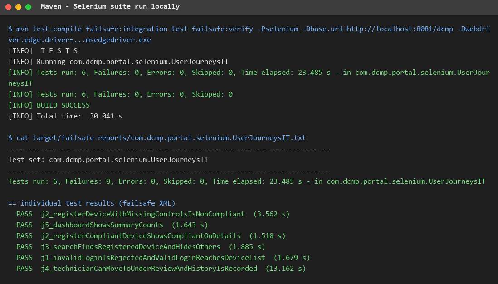
Figure 9.1 - Local execution through Maven: 6 tests, 0 failures, plus per-test results
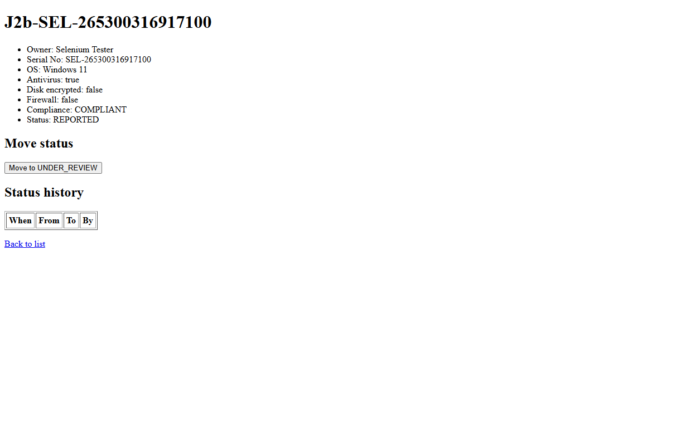
Figure 9.2 - Screenshot saved automatically by the framework when a test failed (J2, during step 10)
STEP 10
Continuous Testing in Jenkins
Task given: Integrate the Device Compliance Management Portal Selenium suite into Jenkins. Publish test reports and configure the pipeline so failed tests stop deployment. Correct at least one deliberately introduced defect and rerun the pipeline.
Deliverable required: Jenkins test report, failed pipeline evidence, defect correction commit and successful rerun.
The Selenium suite runs inside the pipeline between Package and Deploy: the build is started on port 8082 with a throw-away database, the tests run against it, results and failure screenshots are published, and a failure stops the pipeline so Deploy is skipped. A defect was introduced on purpose (compliance rule changed from AND to OR); it passes all unit tests, and only Selenium catches it.
Deliverable required by the sheet
Shown in this report
Jenkins test report
Figures 10.1, 10.4
Failed pipeline evidence
Figures 10.2-10.3
Defect correction commit
Figure 10.5 (diff of both commits)
Successful rerun
Figures 10.6-10.7
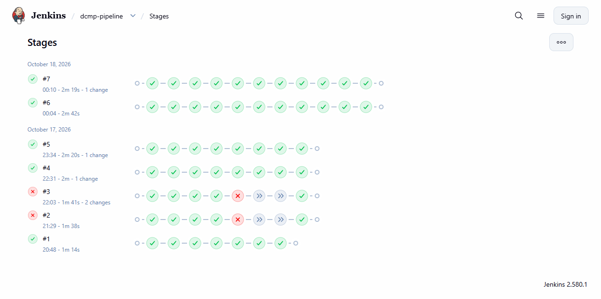
Figure 10.1 - Stage view of all pipeline runs. #3 is the deliberate defect (fails at Selenium); #2 was an earlier unplanned failure from a flaky test wait that was fixed; #4 and later are green
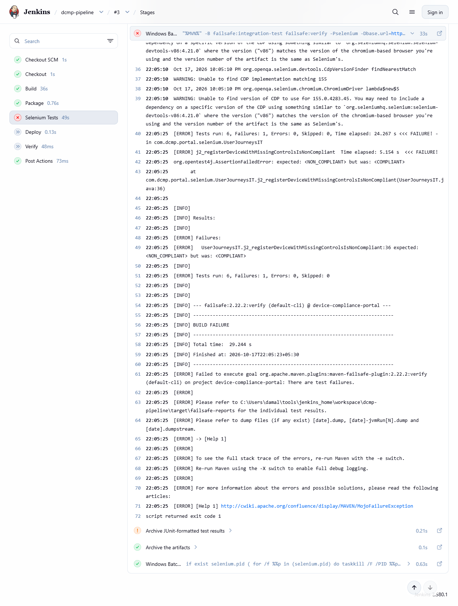
Figure 10.1b - Build #3 stages: red at Selenium Tests, Deploy and Verify skipped
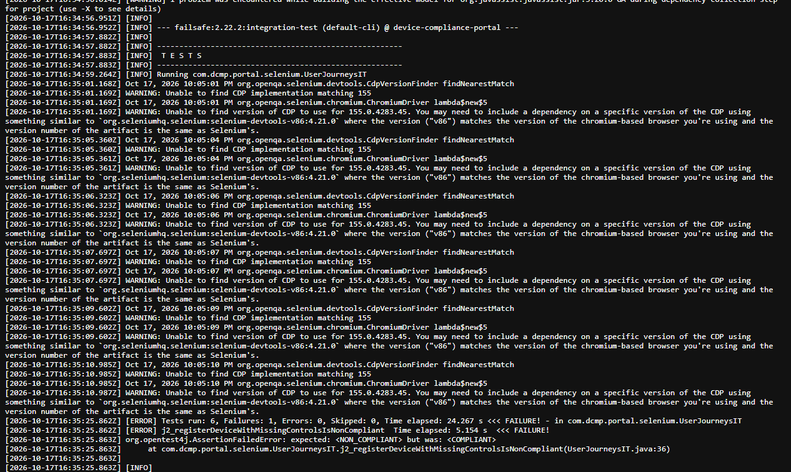
Figure 10.2 - Console of failed build #3: the AssertionFailedError (expected NON_COMPLIANT but was COMPLIANT)
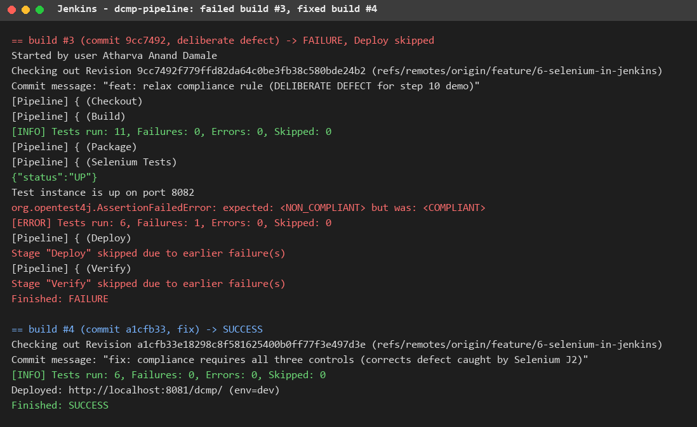
Figure 10.3 - Failed build #3 and successful rerun #4 (log excerpts)Figure 10.4 - Jenkins test report of the failed build: 1 failure (j2_registerDeviceWithMissingControls...)Figure 10.5 - Defect commit 9cc7492 and the correction commit a1cfb33Figure 10.6 - Failure screenshot archived by Jenkins for build #3Figure 10.7 - Build #4 after the fix: all stages green, 6/6 Selenium tests passedFigure 10.8 - Build #4 status page (commit a1cfb33, test result: no failures)
3. Other findings during integration
Run
Problem
Resolution
#2
J3 failed in login with WebDriverException: Node with given id does not belong to the document
Edge reports a replaced page this way instead of StaleElementReferenceException. clickAndWait now treats both as "page changed" (commit eb4e69e). Suite then passed 2/2 local runs and Jenkins #4.
STEP 11
Docker Image and Container Lifecycle
Task given: Create a Dockerfile for the Device Compliance Management Portal. Build and tag the image, run the container, map ports, inspect logs, stop/restart/remove containers and document the complete container lifecycle.
Reproducible with bash scripts/docker-lifecycle-demo.sh.
Phase
Command
Observed result
Create + start, map ports, mount volume
docker run -d --name dcmp-demo -p 8090:8080 -v dcmp-data:/data device-compliance-portal:1.0.0
container started
Health
curl http://localhost:8090/actuator/health
{"status":"UP"}; docker ps shows Up … (healthy), 0.0.0.0:8090->8080/tcp
Inspect
docker inspect, docker stats --no-stream, docker exec dcmp-demo id
status=running, health=healthy, uid=999(dcmp)
Logs
docker logs --tail 5 dcmp-demo
Spring Boot startup lines
Stop
docker stop dcmp-demo
status Exited (143) (SIGTERM, graceful)
Start / restart
docker start dcmp-demo, docker restart dcmp-demo
health UP again
Remove
docker rm -f dcmp-demo
container gone from docker ps -a
Clean up volume
docker volume rm dcmp-data
volume removed
Data persistence check
Created a device in a container with volume dcmp-persist-data, destroyed the container (docker rm -f), started a new
container on the same volume and listed devices: the device Persist-Check was still present. (Test containers/volume removed afterwards.)
STEP 12
Jenkins-Docker Continuous Deployment
Task given: Extend the Device Compliance Management Portal Jenkins pipeline to build a versioned Docker image, publish it to Docker Hub or a local registry and deploy a fresh container automatically after successful tests.
Deliverable required: Versioned image, registry evidence and end-to-end commit-to-container pipeline.
Three Docker stages were added to the pipeline: Docker Build (tag 1.0.<build number>), Docker Push to a local registry (registry:2 on localhost:5000) and Docker Deploy (stop old container, pull the new image back from the registry, run a fresh container on port 8092, health check). They run only after tests and Tomcat deployment passed.
Deliverable required by the sheet
Shown in this report
Versioned image
Figures 12.1-12.2 (tags 1.0.6, 1.0.7)
Registry evidence
Figure 12.2 (catalog and tag list from the registry API)
End-to-end commit-to-container pipeline
Figures 12.3-12.5 (build #7 was started by a Git commit, no manual click)
Jenkinsfile - Docker stages
set "BUILD_ID=dontKillMe"
set "JENKINS_NODE_COOKIE=dontKillMe"
start "tomcat" /B cmd /c ""%TOMCAT_HOME%\\bin\\catalina.bat" run > "%TOMCAT_HOME%\\logs\\jenkins-run.log" 2>&1"
exit /b 0
'''
}
}
stage('Verify') {
steps {
// Wait for the app to come up, then check health
bat '''
@echo off
set /a tries=0
:wait
curl -s -f http://localhost:8081/%APP_CONTEXT%/actuator/health && goto ok
set /a tries+=1
if %tries% GEQ 30 exit /b 1
ping -n 4 127.0.0.1 > nul
goto wait
:ok
echo.
echo Deployed: http://localhost:8081/%APP_CONTEXT%/ ^(env=%DEPLOY_ENV%^)
'''
}
}
// ---- Step 12: continuous deployment with Docker (only reached when every stage above passed) ----
stage('Docker Build') {
steps {
// Versioned image: 1.0.<build number>; "latest" always points at the newest good build
bat '''
docker build --label git.commit=%GIT_COMMIT% -t %REGISTRY%/%IMAGE_NAME%:%APP_VERSION% -t %REGISTRY%/%IMAGE_NAME%:latest .
docker image ls %REGISTRY%/%IMAGE_NAME%
'''
}
}
stage('Docker Push') {
steps {
bat '''
docker push %REGISTRY%/%IMAGE_NAME%:%APP_VERSION%
docker push %REGISTRY%/%IMAGE_NAME%:latest
echo Tags now in the registry:
curl -s http://%REGISTRY%/v2/%IMAGE_NAME%/tags/list
'''
}
}
stage('Docker Deploy') {
steps {
// Replace the running container with a fresh one created from the image pulled back out of the registry
bat '''
docker rm -f %CONTAINER_NAME% 2>nul
docker pull %REGISTRY%/%IMAGE_NAME%:%APP_VERSION%
docker run -d --name %CONTAINER_NAME% --restart unless-stopped -p %DOCKER_PORT%:8080 -v dcmp-app-data:/data -e SPRING_PROFILES_ACTIVE=%DEPLOY_ENV% %REGISTRY%/%IMAGE_NAME%:%APP_VERSION%
exit /b 0
'''
bat '''
@echo off
set /a tries=0
:wait
curl -s -f http://localhost:%DOCKER_PORT%/actuator/health && goto ok
set /a tries+=1
if %tries% GEQ 30 exit /b 1
ping -n 4 127.0.0.1 > nul
goto wait
:ok
echo.
echo Container %CONTAINER_NAME% is healthy: http://localhost:%DOCKER_PORT%/ ^(image %APP_VERSION%, env=%DEPLOY_ENV%^)
docker ps --filter name=%CONTAINER_NAME%
'''
}
Figure 12.1/12.2 - Registry catalog, tags, running container and the git.commit label on the imageFigure 12.3 - Build #6 (manual) and build #7 (automatic, started by commit 386d8d0): stages and image tags (part 1)Figure 12.3 - Build #6 (manual) and build #7 (automatic, started by commit 386d8d0): stages and image tags (part 2)Figure 12.4 - Build #7 stages including Docker Build / Push / DeployFigure 12.4b - Build #7 status page: 'Started by an SCM change' (automatic commit-to-container run)Figure 12.5 - Application running in the freshly deployed container
STEP 13
Configuration Management Script
Task given: Identify all server prerequisites for the Device Compliance Management Portal: packages, users, folders, files, ports and services. Create either a Puppet manifest/modules or an Ansible inventory and YAML playbook to configure the target node.
Deliverable required: Configuration specification, Puppet manifest or Ansible playbook and first execution log.
Ansible (ansible-core 2.17, run from a container) configures a fresh Ubuntu 22.04 node reached over SSH. Source: docs/13-configuration-management.md, folder ansible/.
1. Configuration specification – what the portal needs on a server
Category
Requirement
Ansible task
Packages
openjdk-11-jre-headless (the app is built for Java 11), curl, ca-certificates, supervisor (process manager)
apt – Install prerequisite packages
User / group
system group dcmp and unprivileged system user dcmp (shell /usr/sbin/nologin, home /opt/dcmp)
group, user
Folders
/opt/dcmp (0755), /opt/dcmp/releases/<version> (0755), /var/lib/dcmp/data (0750, H2 database), /var/log/dcmp (0755) – all owned by dcmp
file (loop)
Files
/opt/dcmp/releases/<version>/app.war (0640, from the Jenkins-built artefact); symlink /opt/dcmp/current → active release; /etc/supervisor/conf.d/dcmp.conf (service definition from a Jinja2 template)
copy, file state=link, template
Ports
application listens on 8080/tcp (published as 8093 on the lab host); sshd on 22/tcp for Ansible
wait_for
Services
dcmp runs under supervisor as user dcmp, auto-start and auto-restart, env SPRING_PROFILES_ACTIVE, SPRING_DATASOURCE_URL=jdbc:h2:file:/var/lib/dcmp/data/dcmp
handler supervisorctl reread / update / restart
Verification
GET /actuator/health must return 200 and contain UP
uri with retries
All tunable values (version, profile, port, folders, heap) are in ansible/group_vars/all.yml.
The deployed layout keeps one folder per version, so a previous release can be re-activated by repointing current (used in step 14).
ansible/inventory/hosts.ini
# Target node(s) for the Device Compliance Management Portal.
# In this lab the node is a container on the Docker network "dcmp-net"; on a real server only ansible_host changes.
[dcmp_servers]
dcmp-node ansible_host=dcmp-node
[dcmp_servers:vars]
ansible_user=ansible
ansible_ssh_private_key_file=/root/.ssh/id_ed25519
ansible_become=true
ansible/group_vars/all.yml (variables)
---
# ---- Configuration specification (single place to change settings) ----
app_name: dcmp
app_user: dcmp
app_group: dcmp
app_version: "1.0.6" # release being deployed; each version gets its own folder
app_env: dev # Spring profile (dev / qa)
app_port: 8080 # port the application listens on inside the node
app_home: /opt/dcmp # /opt/dcmp/releases/<version>/app.war + /opt/dcmp/current -> release
data_dir: /var/lib/dcmp/data # H2 database files
log_dir: /var/log/dcmp
java_heap: 256m
# WAR built and tested by Jenkins (copied into ansible/artifacts/ by run.sh); path as seen from the control container
war_src: "/work/ansible/artifacts/app-{{ app_version }}.war"
os_packages:
- openjdk-11-jre-headless
- curl
- ca-certificates
- supervisor
health_wait: 60 # seconds to wait for the port after a deployment
ansible/playbook.yml (current version, includes the step-14 rollback logic)
---
# Steps 13-14 - configure / provision a server for the Device Compliance Management Portal.
# * Idempotent: running it again on a configured node reports changed=0.
# * Safe releases: each version lives in /opt/dcmp/releases/<version>; /opt/dcmp/current points at the active one.
# If the new release fails its health check the play restores the previous release automatically and then fails.
- name: Provision Device Compliance Portal server
hosts: dcmp_servers
become: true
tasks:
# ---------------- packages ----------------
- name: Refresh apt cache (at most once per hour)
ansible.builtin.apt:
update_cache: true
cache_valid_time: 3600
- name: Install prerequisite packages
ansible.builtin.apt:
name: "{{ os_packages }}"
state: present
# ---------------- user, folders ----------------
- name: Create application group
ansible.builtin.group:
name: "{{ app_group }}"
system: true
- name: Create unprivileged application user
ansible.builtin.user:
name: "{{ app_user }}"
group: "{{ app_group }}"
system: true
home: "{{ app_home }}"
create_home: false
shell: /usr/sbin/nologin
- name: Create application, release, data and log folders
ansible.builtin.file:
path: "{{ item.path }}"
state: directory
owner: "{{ app_user }}"
group: "{{ app_group }}"
mode: "{{ item.mode }}"
loop:
- { path: "{{ app_home }}", mode: "0755" }
- { path: "{{ app_home }}/releases", mode: "0755" }
- { path: "{{ app_home }}/releases/{{ app_version }}", mode: "0755" }
- { path: "{{ data_dir | dirname }}", mode: "0755" }
- { path: "{{ data_dir }}", mode: "0750" }
- { path: "{{ log_dir }}", mode: "0755" }
# ---------------- remember what is running now (for rollback) ----------------
- name: Look at the currently active release
ansible.builtin.stat:
path: "{{ app_home }}/current"
register: current_link
- name: Remember the previous release
ansible.builtin.set_fact:
previous_release: "{{ current_link.stat.lnk_target | default('') if current_link.stat.islnk | default(false) else '' }}"
- name: Show release change
ansible.builtin.debug:
msg: "active release: '{{ previous_release | basename }}' -> new release: '{{ app_version }}'"
# ---------------- deploy the new release, with automatic rollback ----------------
- name: Deploy and verify release {{ app_version }}
block:
- name: Deploy the application WAR into its versioned release folder
ansible.builtin.copy:
src: "{{ war_src }}"
dest: "{{ app_home }}/releases/{{ app_version }}/app.war"
owner: "{{ app_user }}"
group: "{{ app_group }}"
mode: "0640"
notify: Apply service changes
- name: Point 'current' at this release
ansible.builtin.file:
src: "{{ app_home }}/releases/{{ app_version }}"
dest: "{{ app_home }}/current"
state: link
owner: "{{ app_user }}"
group: "{{ app_group }}"
notify: Apply service changes
- name: Install the supervisor program definition for the application
ansible.builtin.template:
src: dcmp.conf.j2
dest: "/etc/supervisor/conf.d/{{ app_name }}.conf"
owner: root
group: root
mode: "0644"
notify: Apply service changes
- name: Apply pending service changes now (so the health check below tests the new release)
ansible.builtin.meta: flush_handlers
- name: Make sure the application service is running
ansible.builtin.command: supervisorctl status {{ app_name }}
register: svc_status
changed_when: false
failed_when: "'RUNNING' not in svc_status.stdout and 'STARTING' not in svc_status.stdout"
- name: Wait until the application port is listening
ansible.builtin.wait_for:
host: 127.0.0.1
port: "{{ app_port }}"
timeout: "{{ health_wait }}"
- name: Health check
ansible.builtin.uri:
url: "http://127.0.0.1:{{ app_port }}/actuator/health"
return_content: true
register: health
retries: 6
delay: 5
until: health.status == 200 and "UP" in health.content
- name: Report result
ansible.builtin.debug:
msg: "{{ app_name }} {{ app_version }} (env={{ app_env }}) is {{ health.json.status }} on port {{ app_port }}"
rescue:
- name: "ROLLBACK - release {{ app_version }} failed its health check"
ansible.builtin.debug:
msg: "restoring previous release '{{ previous_release | basename }}'"
- name: Stop here if there is nothing to roll back to
ansible.builtin.fail:
msg: "Release {{ app_version }} failed and there is no previous release to restore."
when: previous_release == ''
- name: Re-point 'current' at the previous release
ansible.builtin.file:
src: "{{ previous_release }}"
dest: "{{ app_home }}/current"
state: link
owner: "{{ app_user }}"
group: "{{ app_group }}"
- name: Remove the failed release folder
ansible.builtin.file:
path: "{{ app_home }}/releases/{{ app_version }}"
state: absent
- name: Restore the service definition (so APP_VERSION names the release that is really running)
ansible.builtin.template:
src: dcmp.conf.j2
dest: "/etc/supervisor/conf.d/{{ app_name }}.conf"
owner: root
group: root
mode: "0644"
vars:
release_label: "{{ previous_release | basename }}"
- name: Restart the service on the previous release
ansible.builtin.shell: |
supervisorctl reread
supervisorctl update {{ app_name }}
supervisorctl restart {{ app_name }}
changed_when: true
- name: Health check after rollback
ansible.builtin.uri:
url: "http://127.0.0.1:{{ app_port }}/actuator/health"
return_content: true
register: recovered
retries: 12
delay: 5
until: recovered.status == 200 and "UP" in recovered.content
- name: Fail the play so the bad release is reported
ansible.builtin.fail:
msg: "Release {{ app_version }} FAILED health check - rolled back to {{ previous_release | basename }} ({{ recovered.json.status }})."
handlers:
- name: Apply service changes
ansible.builtin.shell: |
supervisorctl reread
supervisorctl update {{ app_name }}
supervisorctl restart {{ app_name }}
changed_when: true
Figure 13.0 - Lab topologyFigure 13.1 - First execution: ok=14 changed=8 failed=0Figure 13.2 - Second execution: changed=0
STEP 14
Automated Provisioning and Reliability Validation
Task given: Provision a clean target environment for the Device Compliance Management Portal using Puppet/Ansible. Deploy the application or container, rerun the automation to demonstrate idempotency, perform a health check and test rollback/recovery to the previous stable release.
Deliverable required: Provisioned node, idempotency evidence, health-check result and rollback/recovery demonstration.
A brand-new node was provisioned, the playbook was re-run to prove idempotency, health was checked, and several recovery scenarios were exercised. A bug found during this step (rollback restored the code but left the failed release's label) was fixed and re-tested. Source: docs/14-provisioning-and-reliability.md.
Deliverable required by the sheet
Shown in this report
Provisioned node
Figures 14.1-14.2
Idempotency evidence
Figure 14.3 (changed=0)
Health-check result
Figures 14.2, 14.4, 14.7
Rollback / recovery demonstration
Figures 14.5-14.9
Figure 14.1 - Clean node before provisioning: no Java, no dcmp user, no /opt/dcmpFigure 14.2 - Provisioning release 1.0.6: ok=17 changed=8 failed=0, health UPFigure 14.3 - Re-run: ok=16 changed=0 (idempotent)Figure 14.4 - Upgrade to release 1.0.7 (active release 1.0.6 -> 1.0.7), health UPFigure 14.5 - Provisioned node: home page shows Release 1.0.7Figure 14.6 - Bad release 1.0.8: health check fails -> automatic rollback to 1.0.7 (part 1)Figure 14.6 - Bad release 1.0.8: health check fails -> automatic rollback to 1.0.7 (part 2)Figure 14.7 - Manual rollback to the earlier stable release 1.0.6Figure 14.8 - Process crash (kill -9) and node reboot: service recovers by itselfFigure 14.9 - Final promotion of the latest stable release 1.0.7Figure 14.10 - Health endpoint of the provisioned node (via published port 8093)
6. Problem found and fixed during testing
The first attempt at scenario A (step14-4a-first-attempt-label-bug.log) did roll back the code and the app was healthy, but the home page
still said Release: 1.0.8: the rollback restored the symlink but not the service definition, which still carried the failed release's
APP_VERSION label. Fix: the rescue section now re-renders the service definition with the previous release label (variable release_label)
before restarting. Re-test: page shows Release: 1.0.7 after the failed deployment. (Note: Ansible extra-vars -e app_version=… always win over
task-level vars, so a separate variable name was needed.)